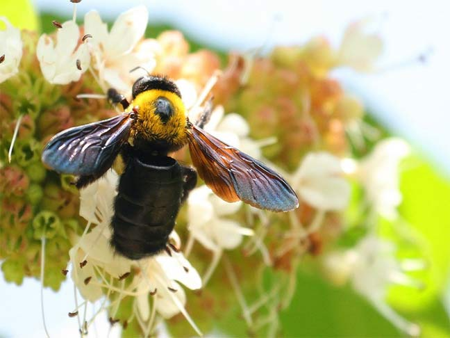

在自然界,会飞的动物大多双翅宽厚有力,身体修长轻盈,而大黄蜂则不同,它有一个硕大的身躯和一对非常小且薄薄的翅膀。依照生物学的理论来说,大黄蜂是绝对飞不起来的。而物理学家的论调则是,大黄蜂身体与翅膀比例的这种设计从流体力学的观点同样是绝对没有飞行的可能。也就是说,大黄蜂这种动物,根本是不可能飞得起来的。

可是,在大自然中,只要是正常得大黄蜂没有一只是不能飞的;甚至其飞行的速度并不比其他能飞的动物来得差。这种现象仿佛是大自然在和科学家们开了一个很大的玩笑。最终,是社会行为学家为大黄蜂找到了飞翔的答案。答案很简单,那就是大黄蜂根本不懂生物学与流体力学。每一只大黄蜂在它成熟之后,就很清楚的知道,它一定要飞起来去觅食,否则就必定会活活饿死。这正是大黄蜂之所以能飞的那么好的奥秘! 换言之,如果大黄蜂接受过教育,学会了生物学的基本概念,而且也了解了流体力学。大黄蜂就很清楚的知道,自己的身体与翅膀的设计完全不适合来飞行。那么,这只学会告诉自己"不可能"会飞的大黄蜂,还能够飞得起来吗?
根据气体动力学家的研究，大黄蜂的两只翅膀过于单薄，大黄蜂的体积又比较庞大，应该不会飞。幸好大黄蜂们不知道此事，还是一个劲儿地振翅学飞，勇往直前。大黄蜂的故事正是那些不知自己有力未逮，依然奋勇向前，终能改变事实,攀上高峰的平凡人们的最佳象征。